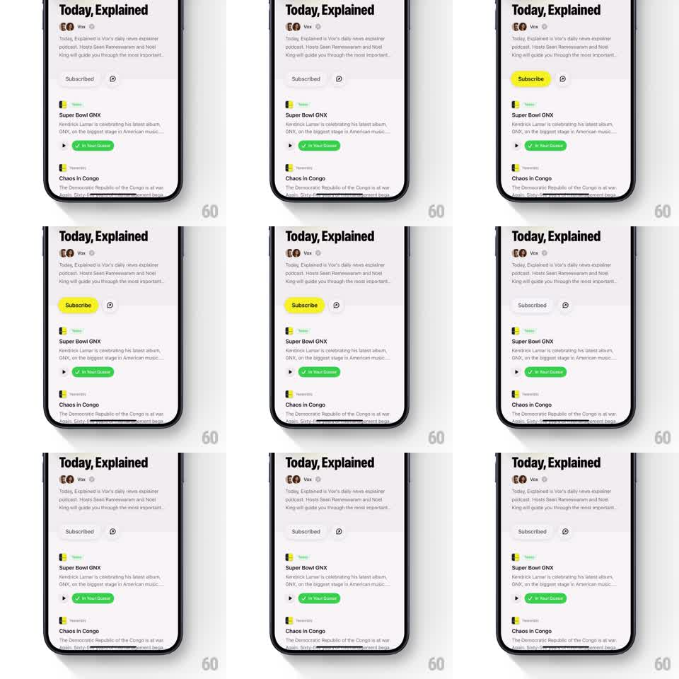

Media
Frame-by-frame

Rebuild this animation 1:1: Queue's podcast subscribe toggle - tapping the yellow Subscribe pill springs it into the neutral Subscribed state (and back), the whole button bouncing like it was squeezed.

Rebuild this animation 1:1: Queue's podcast subscribe toggle - tapping the yellow Subscribe pill springs it into the neutral Subscribed state (and back), the whole button bouncing like it was squeezed. ## Integration Integration: stack-agnostic spec - springs given as stiffness/damping, timed motions as duration + curve; map every value to your framework and animation library of choice. ## Scene Podcast detail page: artwork, title, description, then a row with the Subscribe pill and a small download icon. Episode list below. ## Motion spec Pattern: spring squash toggle, ~600ms. - Tap Subscribe: the pill squashes (scale 1 -> 0.88, 80ms, ease-in) then rebounds past its size (spring ~500/15) while its fill slides yellow -> light gray and the label crossfades Subscribe -> Subscribed (150ms). - The rebound overshoots ~6% in both axes with one visible wobble before settling. - Tap Subscribed to undo: identical squash-rebound, colors and labels reverse. - The adjacent download icon does not move; only the pill deforms. - State persists - the button lands exactly on its new resting size, no residual scale. ## Calibration - One squash, one overshoot, one settle. A double wobble reads as jello. - The label crossfade happens during the rebound, hidden by the motion. ## Reduced motion Color and label crossfade only (200ms); no squash. ## Don't miss - The pill's corner radius stays proportional during squash - squashing a fixed-radius pill kinks the shape. - Hit target stays the full pill at every frame, including mid-squash.